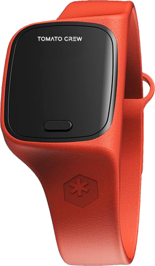
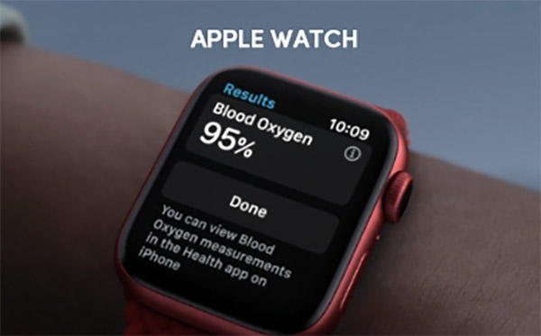
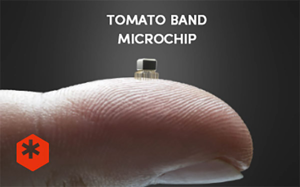

-
당신의 걱정없는 삶을 위해
2017년 추춘 겨울, 고독사 뉴스를 보며 고민 끝에 탄생한 토마토 크루는 당신의 삶을 응원하는 디지털 헬스케어 스타트업입니다.
-
맥박에 담긴 정보 탐구
혈류맥파에는 우리가 탐지 못한 많은 정보가 숨어 있습니다. 토마토 크루는 NIR 분광학을 이용하여 숨어있는 맥박 정보는 탐구하고 있습니다.
-
우리의 궁극적목표, 혈당
“엄마, 혈당 잴 때 피 안 뽑아도 돼?” 누구에게나 채혈은 부담스럽죠, 토마토 크루는 NIR 웨어러블 기기를 이용한 비침습 혈당 검출을 목표로합니다.
Products

손가락 끝을 아프게 채혈하거나 혈당 측정을 위한 패치를 자주
교체해야하는 번거로움은 더 이상 없습니다.
토마토 크루는 특허 기술을 토대로 비침습성 연속 혈당 모니터링
(NiCGM) 밴드를 개발하고 있습니다.
Blog
-

토마토밴드와 애플워치 SE 새로운 건강관리 기능부터 두 제품의 차이점
[CONNECT 2021 기자간담회] 빅브랜드와 스타 간의 시너지 처럼… 네이버, 480만 SME와 160만 창작160만 창작160만 창작
2020.10.04 -
480만 SME와 160만 창작자를 연결하는
[CONNECT 2021 기자간담회] 빅브랜드와 스타 간의 시너지 처럼… 네이버, 480만 SME와 160만 창작...
2020.11.10 -

토마토밴드 초소용 마초이크로칩 이식
밴드Ⅱ에는 수많은 센서가 있다. 하루 중 모든 움직임을 측정하고 수치화해 차트를 만든다. 사용된 부품의 ...
2020.11.21
지도 영역 입니다.